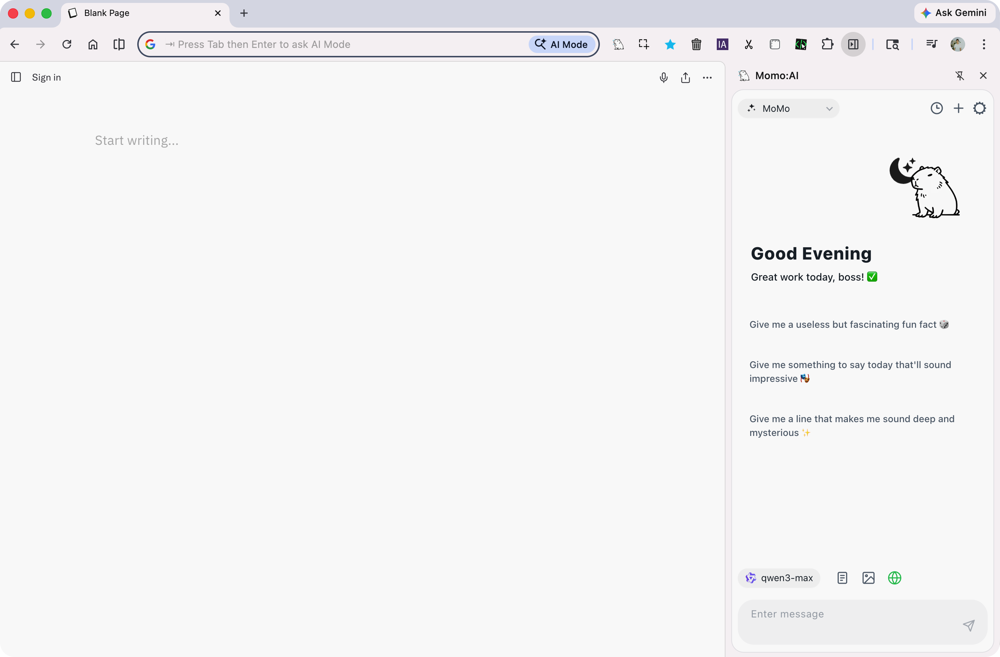

Introduction
What is Hii~ Momo: AI Assist?
Hii~ Momo: AI Assist is a Chrome browser extension that provides an elegant AI chat sidebar experience. You can open the sidebar anytime while browsing any webpage to chat with AI, without switching tabs or opening other apps.
Momo's core philosophy is "friendly and practical" — it's not just a chat interface, but a comprehensive AI assistant integrating web search, page capture, image understanding, and deep reasoning.

Core Features
🤖 Multi AI Provider Support
Supports 20+ AI providers across cloud, local, and custom endpoints. See AI Providers for details.
| Provider | Type | Description |
|---|---|---|
| OpenAI | Cloud | GPT-5.4, GPT-5.4-mini, etc. |
| Anthropic (Claude) | Cloud | Claude Sonnet / Opus series |
| Google AI | Cloud | Gemini 3 Flash series |
| DeepSeek | Cloud | DeepSeek Chat / Reasoner |
| Qwen | Cloud | Qwen3.5 series |
| xAI | Cloud | Grok 4 series |
| Mistral | Cloud | Mistral Large / Small |
| OpenRouter | Cloud | Aggregation platform with access to multiple models |
| Together AI / Hugging Face / Novita / Chutes, etc. | Cloud | More OpenAI-compatible platforms |
| Custom | Custom | User-defined Base URL and model names |
| Ollama / LM Studio | Local | Run local open-source models |
| Hermes / OpenClaw | Local Agent | Agent gateways (Beta) |
🔍 Web Search
Built-in search engine integration for real-time web information during AI conversations.
📄 Page Capture
One-click page context with default Smart Capture mode selection. Page content is injected only for the referenced user turn; follow-up messages do not resend the full page.
💡 Thinking Mode
Enable deep reasoning, showing the complete thinking process — ideal for complex problem solving.
🖼️ Image Understanding
Upload or paste images for vision-capable models to analyze image content.
🔊 Text-to-Speech
AI responses support TTS with customizable voice, speed, and pitch. You can also enable auto-read AI replies in settings.
🏷️ Auto Chat Titles
New chats get a fallback title first, then a short AI-generated summary after the first reply. Manual renames are never overwritten.
📝 System Prompt Management
Built-in useful prompts (translation assistant, writing assistant, etc.), also fully customizable.
🌐 Multi-language Interface
Full support for Traditional Chinese, Simplified Chinese, and English.
Privacy & Security
- All settings are synced across Google accounts via
chrome.storage.sync - Chat history is stored locally only (
chrome.storage.local) - No personal data is collected, and your conversations are never sent to third-party servers (except the AI provider you choose)